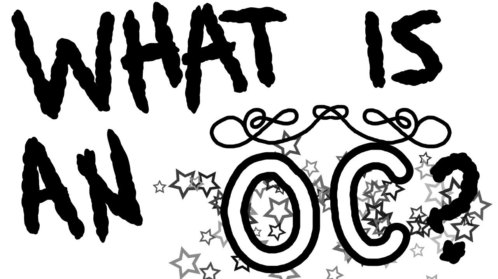
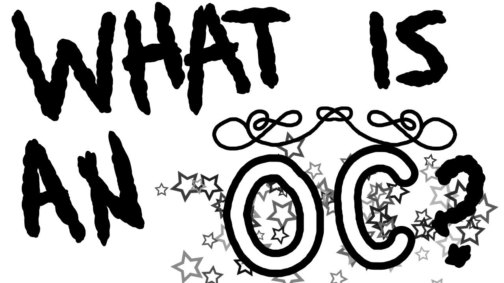
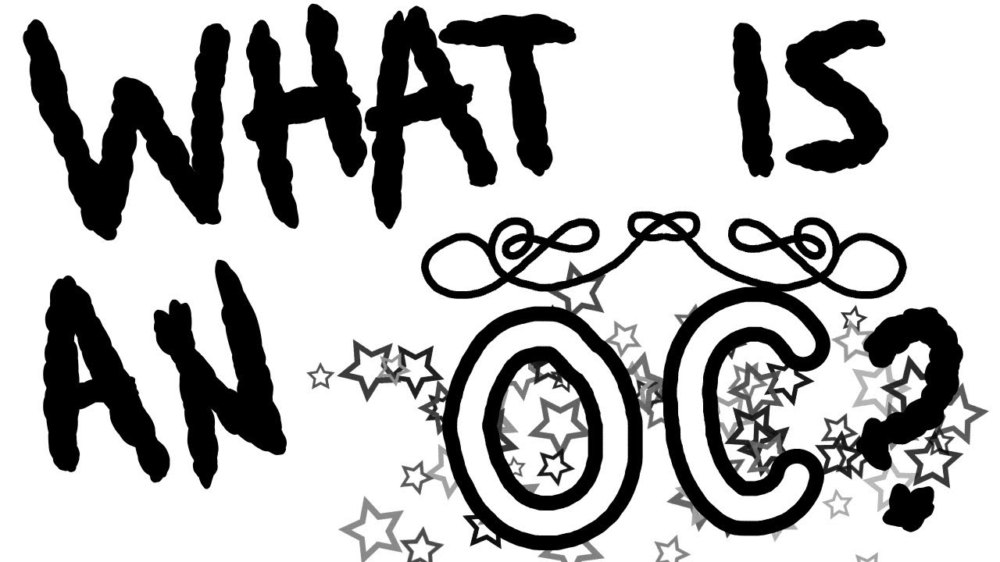
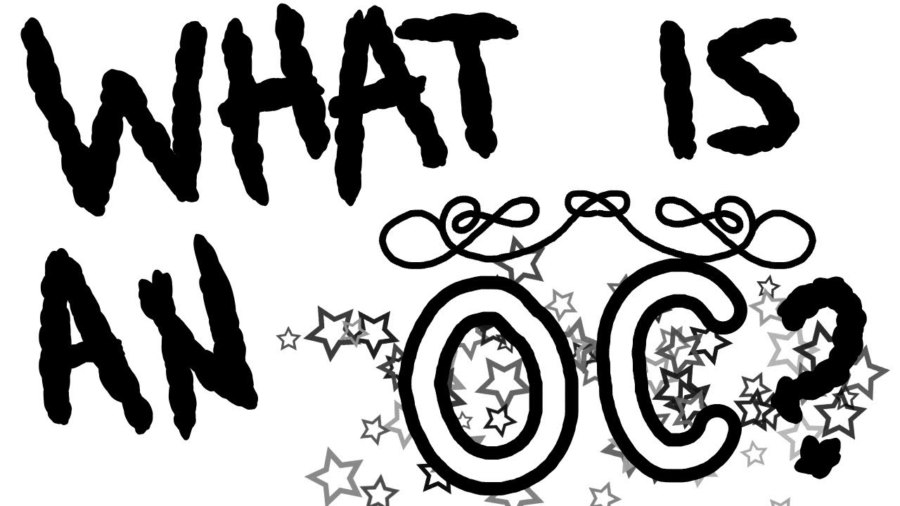

My hobby is reading manga/comic books on this kids reading site called Epic. The reason I read it is because those manga books that I was reading were actually anime education books and i'm also a tiny bit of an anime fan (please don't judge). Another reason is I also read them for entertainment. I also have another hobby which is making OC's. You can also call them Original Characters because that is what it stands for lol. The reason is it's actually pretty fun to make because it's all your creativity. I make OC's on gacha apps, I find some out in my head, I make some up in video games where we can dress up and roleplay, I find some out on movies based on some video games, I even made one up while animating on this app called FlipaClip. Yeah, and that's all my favorite hobbies.
So, um... I made a few Mangas and a lot of OCs. All of my mangas live inside my diaries. (which is something weird about me or maybe not lol) I make my OCs in gacha apps and in other places like I said in the paragraph above. Here are some wikipedia sites of manga.(even anime and the wikipedia site for the OC that I talk about is not there.) :>
The only way to contact me > > > my email. My email is: kaisersumi2020@gmail.com